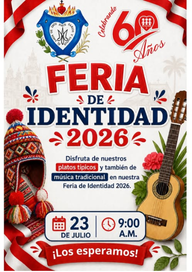

Festival del Canto Useriano 2026
Una jornada dedicada a la expresión musical y artística de nuestra comunidad educativa, inspirada en los valores y el legado del Padre Jerónimo Usera.
IDENTIDAD EN MOVIMIENTO
Tradiciones, expresiones artísticas y actividades que fortalecen la identidad de nuestra comunidad educativa.
Una jornada dedicada a la expresión musical y artística de nuestra comunidad educativa, inspirada en los valores y el legado del Padre Jerónimo Usera.
La Feria de Identidad reunió a nuestra comunidad educativa en una jornada dedicada a valorar nuestras raíces, costumbres, expresiones culturales y diversidad.

La comunidad educativa fue invitada a participar en la Feria de Identidad 2026, un espacio para compartir y reconocer las expresiones culturales que forman parte de nuestra diversidad.
Una celebración de la creatividad y el talento artístico de nuestros estudiantes a través de actividades que promueven la expresión, la sensibilidad y la cultura.